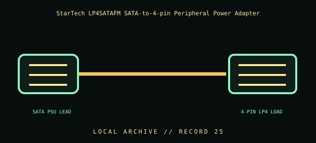

[ INDIVIDUAL COMPONENT // CABLES & ADAPTERS ]
StarTech LP4SATAFM SATA-to-4-pin Peripheral Power Adapter
StarTech.com LP4SATAFM SATA power plug to 4-pin LP4 peripheral-power receptacle adapter. This entry identifies the documented model and does not claim that visually similar products share its pinout, protocol, capability, or host compatibility.

COMPATIBILITY WARNING: Verify the exact product model, host/device role, signal protocol, electrical requirements, and manual before connection. Connector fit alone does not prove compatibility.
Specifications
| Catalog subcategory | Internal power cables |
|---|---|
| Catalog identity | StarTech.com LP4SATAFM SATA power plug to 4-pin LP4 peripheral-power receptacle adapter |
| Verified protocol / model information | SATA 15-pin power plug to 4-pin LP4 (legacy peripheral-drive power) receptacle, per manufacturer product identification. It adapts the connector form and does not regulate voltage or convert a data protocol. |
| Connector ends | SATA PSU LEAD → 4-PIN LP4 LOAD; diagram is schematic, not a pinout map. |
Physical & electrical compatibility
The source must be a standard PSU SATA power output and the load must be a device designed for the matching 4-pin peripheral-power input. Not for modular PSU sockets: never connect a SATA-to-LP4 adapter to a PSU modular panel or substitute it for a modular cable. Check device voltage/polarity and current requirements; avoid forcing, reversing, or overloading connectors.
Archival & handling notes
Keep labeled as SATA-power-to-LP4 direction. Photograph both connector faces and inspect for browned plastic, bent contacts, loose terminals, and insulation damage. If its source PSU or previous load is unknown, do not energize it.
Record provenance, condition, label photographs, exact full part number/revision, host system, and any test method/result. Preserve packaging and source documents with the cable when available.
Manufacturer & standards references
- StarTech — LP4SATAFM SATA-to-LP4 power adapterManufacturer confirms connector conversion and intended power use.
- ATX 12V Power Supply Design Guide v1.3 — archival referenceReference for PSU power rail context; the adapter itself does not establish load current capability.
Manufacturer documentation applies to the cited model; standards references describe the protocol family. Where product revisions or device support vary, the exact manufacturer manual and host documentation take precedence.